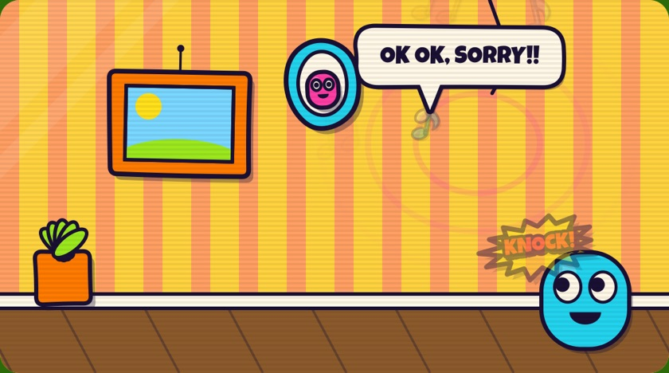
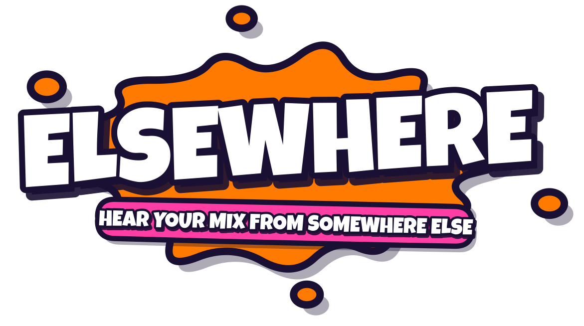
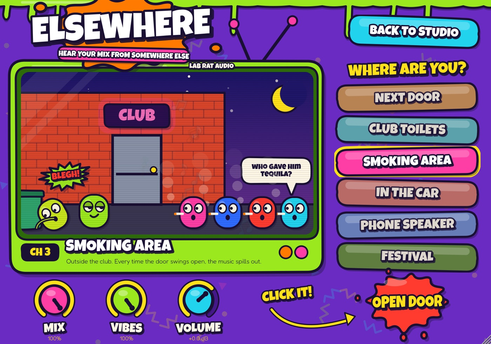
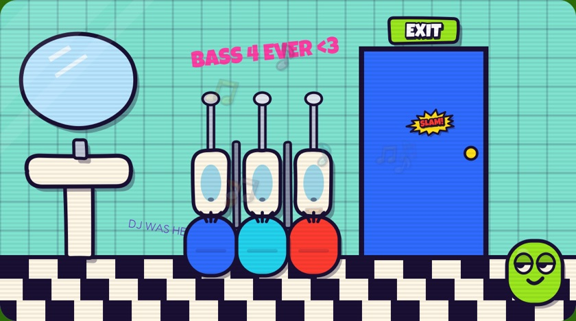
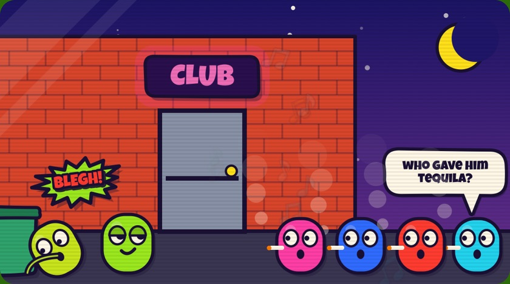
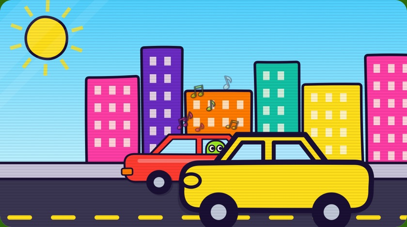
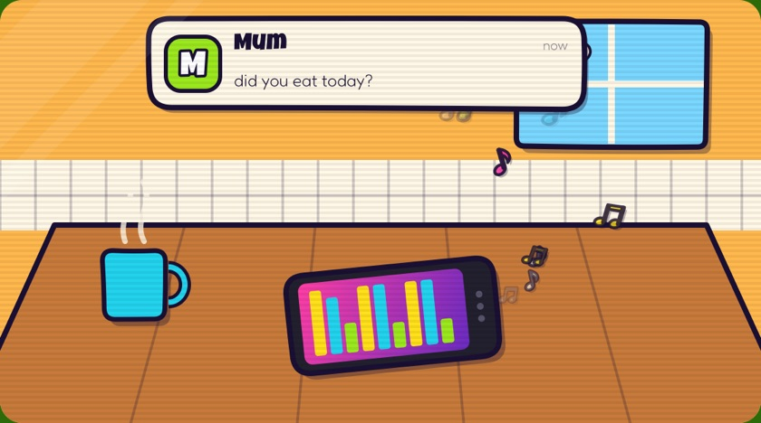
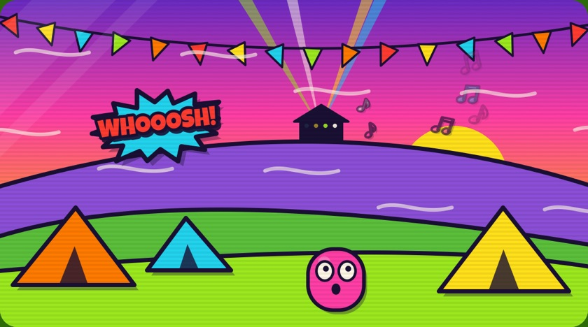

Next Door
Your neighbour is blasting your track. Only the bass makes it through the wall. Knock, and they shout back and turn it down… for a bit.

Your mix sounds great in the studio. But how does it sound through your neighbour's wall? From the club toilets? Blasting out of a parked car? Elsewhere teleports your track to six places people actually hear music, so you can check your mix there.
Free. First time on a Mac? There's one extra click, see how to install.

Six places, each with a big button to smash, and a cartoon that dances along to your track.

Your neighbour is blasting your track. Only the bass makes it through the wall. Knock, and they shout back and turn it down… for a bit.

Muffled club through a tiled room. People wander in and out, and every time the door swings open the music floods in.

Outside, with the smokers. Chatter, laughs, the city round the corner, and the club leaking out when the door opens. Someone may come out looking green.

Parked downtown, stereo up: boomy cabin, bright dash tweeters. Step outside and hear what the street hears, with traffic honking past.

Your mate plays it off their phone on the kitchen table. Tiny speaker, no bass, and messages keep buzzing in. Mum asks if you ate.

Back at the campsite, half a kilometre from the main stage. The wind bends the sound and the valley echoes it back.
Put Elsewhere last on your master track. The places are loudness-matched, so flipping between them won't jump in level.
How far you teleport. 100% is fully there; lower blends your dry mix back in.
How much life is around you: people, traffic, wind. Turn it to 0 for a clean, quiet mix check.
Output level, for when you want it louder or quieter overall.
An instant A/B: one click and you're hearing your untouched mix again.
Four steps. The second one is the only odd bit, and you only do it once.
Open Elsewhere-0.1.0-mac.pkg from your Downloads folder. macOS will say it can't check it for malicious software and won't open it. That's expected, click Done.
Open System Settings → Privacy & Security, scroll right down, and next to "Elsewhere-0.1.0-mac.pkg was blocked" click Open Anyway. Enter your Mac password.
On macOS 14 or older you can instead Control-click the file, choose Open, then Open again.
Continue, Install, done. It puts the VST3 and Audio Unit in your Mac's plug-ins folders for you.
Restart it, or rescan plug-ins (Ableton: Settings → Plug-Ins → Rescan). Look for Lab Rat Audio → Elsewhere and drop it last on your master track.
Apple only skips the warning for apps signed with a paid Apple developer certificate. Elsewhere is a hobby project and isn't signed (yet), so macOS asks you to confirm once. The plugin itself is the same either way.
Anything that loads VST3 or Audio Units on a Mac: Ableton Live, Logic Pro, FL Studio, Bitwig, Reaper, Cubase, Studio One, GarageBand and more. Pro Tools (AAX) isn't supported.
No, it's synthesised gibberish (read the speech bubbles for what they're on about). Everything you hear around the music is generated live, so there are no samples and it never repeats exactly.
No: it uses a few percent of one CPU core and adds no latency.
Yes. Elsewhere is free software under the GNU AGPL v3: the whole source is on GitHub, and you're welcome to study it, change it and share it, as long as what you share stays open under the same licence.
Delete Elsewhere.vst3 from /Library/Audio/Plug-Ins/VST3 and Elsewhere.component from /Library/Audio/Plug-Ins/Components. (In Finder, press Cmd+Shift+G and paste the folder path.)